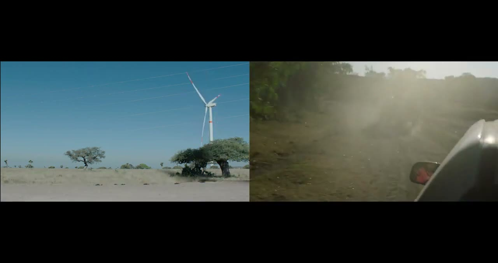
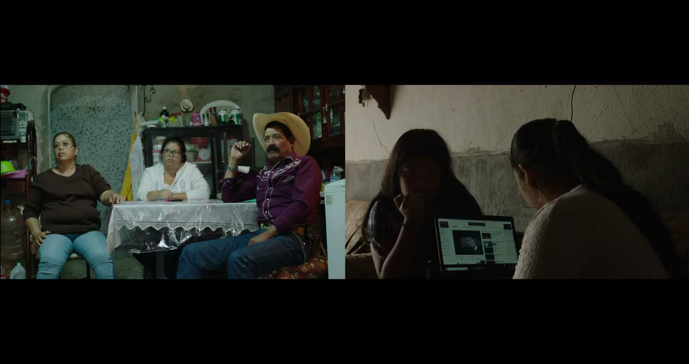
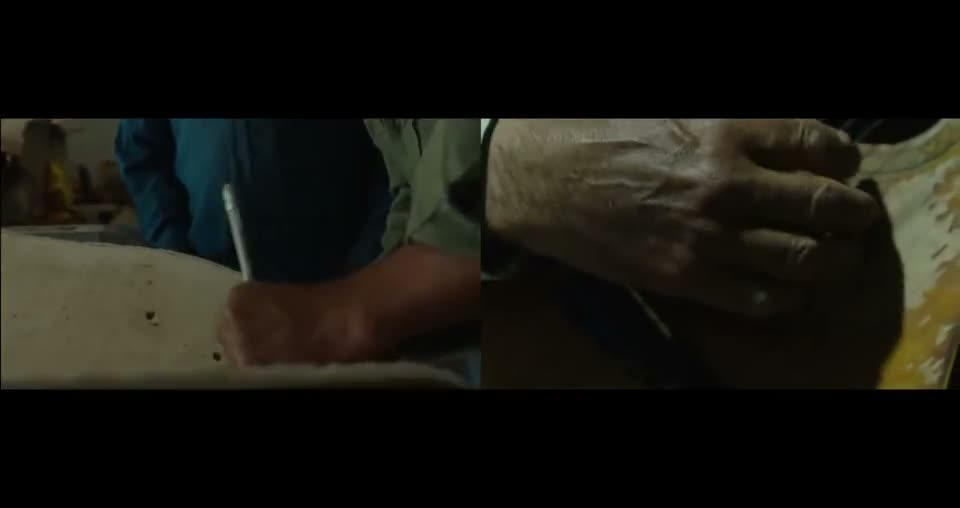
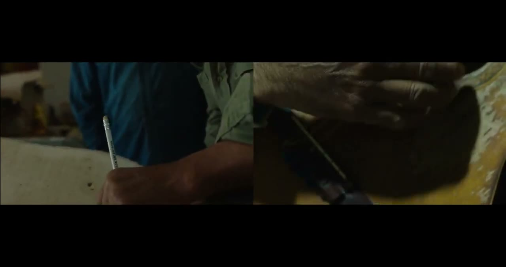
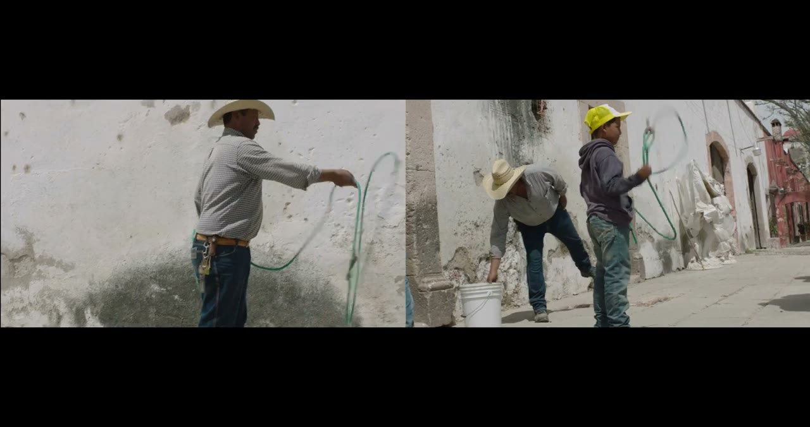
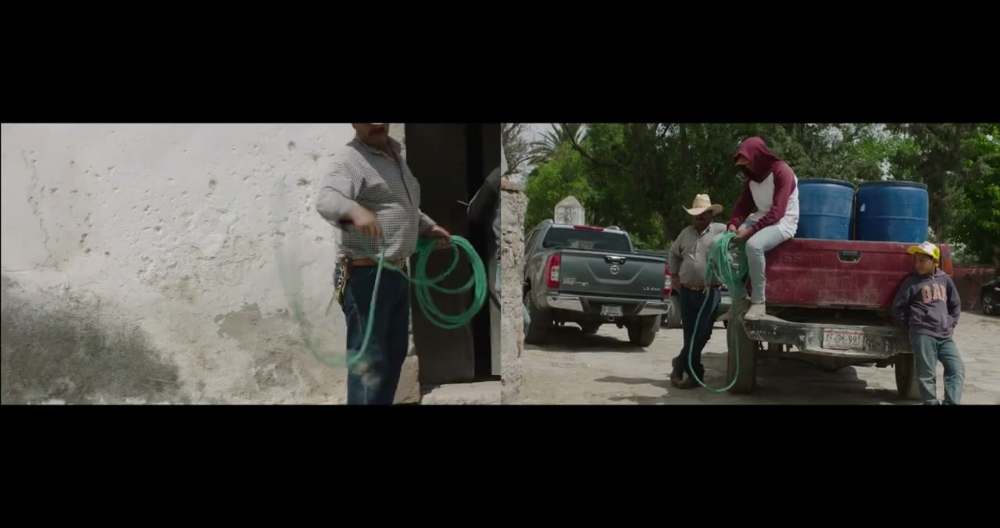

Casa productora de cine · Ciudad de México
Documental filmado en Chinampas, una comunidad del centro de México de la cual varios de sus miembros han tenido que emigrar a Estados Unidos. Explora la relación entre la comunidad y la naturaleza que la rodea, siempre en presencia de una planta de energía eólica, y se pregunta dónde está el futuro de las comunidades afectadas por la pobreza, en un contexto definido por el progreso ambiental, la violencia y la corrupción.
Documental de dos canales, 20 minutos, dirigido por Yago Ontañón de Prado y Tomás Fernández Vértiz. Presentado en APT Gallery y Fitzrovia Gallery (Londres), en el London Migration Film Festival (2021) y en Waking Life Festival: Moon Cinema 2022 (Portugal). Filmado en 2018 y reeditado en 2021.





